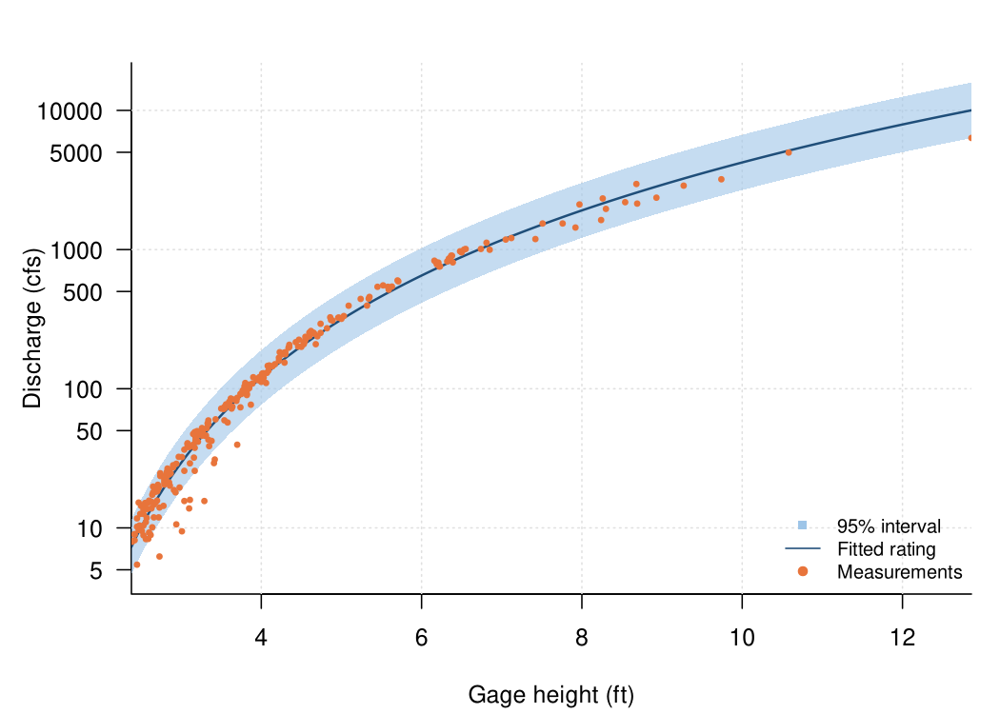
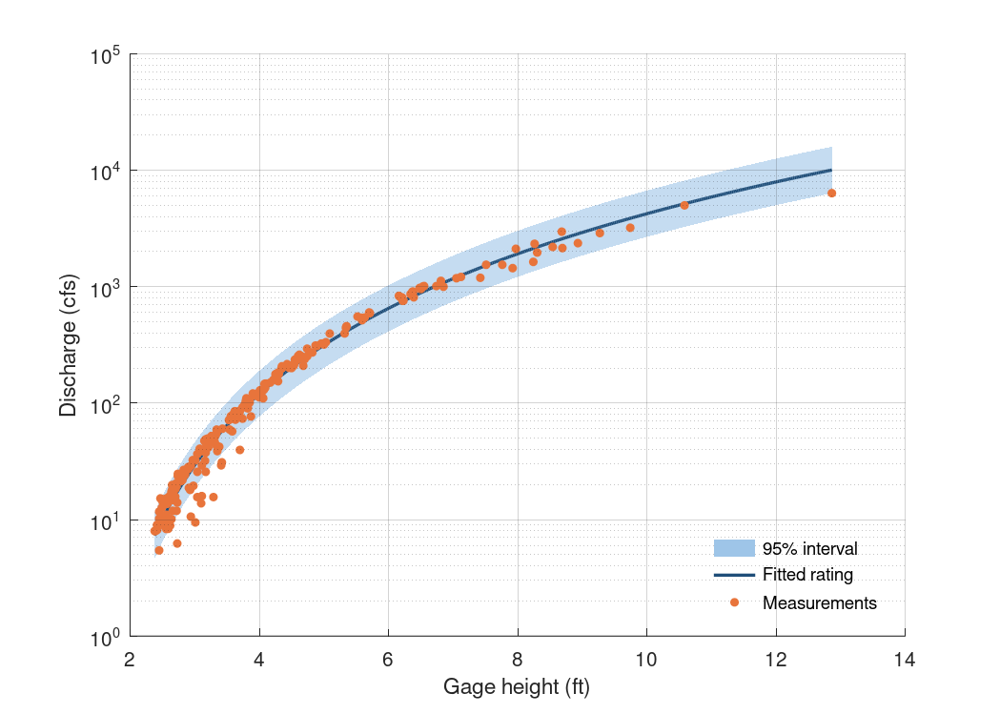

Chapter 4 · Streamflow, Runoff Generation, and Overland Flow
Stage–discharge rating curve with 95% interval
Field discharge measurements, power-law rating fit and 95% band (log–log).
Source: Chapter 4 draft; data supplied by the chapter author (figs/fig8_measurements_with_fit.csv, fig8_rating_fit.csv)
Data: fig8_measurements_with_fit.csv, fig8_rating_fit.csv

Code: rating_curve.py · image: figure_python.png
"""Stage–discharge rating curve with 95% interval
Chapter 4 draft; data supplied by the chapter author (figs/fig8_measurements_with_fit.csv, fig8_rating_fit.csv)
Run: python3 rating_curve.py -> figure_python.png"""
import numpy as np
import pandas as pd
import matplotlib
matplotlib.use("Agg")
import matplotlib.pyplot as plt
a = pd.read_csv("fig8_measurements_with_fit.csv")
b = pd.read_csv("fig8_rating_fit.csv")
fig, axes = plt.subplots(1, 1, figsize=(7, 5), squeeze=False)
axes = axes[:, 0]
ax = axes[0]
ax.fill_between(b["gage_height_ft"], b["Q_lower_95_cfs"], b["Q_upper_95_cfs"], color="#9ec5e8", alpha=0.6, lw=0, label="95% interval")
ax.plot(b["gage_height_ft"], b["Q_fit_cfs"], color="#1f4e79", lw=1.6, ls="-", label="Fitted rating")
ax.scatter(a["gage_height_ft"], a["discharge_cfs"], s=14, color="#e8743b", label="Measurements", zorder=3)
ax.set_yscale("log")
ax.set_xlabel("Gage height (ft)")
ax.set_ylabel("Discharge (cfs)")
ax.legend(frameon=False, loc="lower right", fontsize=8)
ax.grid(alpha=0.25)
for s in ("top", "right"): ax.spines[s].set_visible(False)
fig.tight_layout()
fig.savefig("figure_python.png", dpi=150)

Code: rating_curve.R · image: figure_r.png

# Stage–discharge rating curve with 95% interval
# Chapter 4 draft; data supplied by the chapter author (figs/fig8_measurements_with_fit.csv, fig8_rating_fit.csv)
# Run: Rscript rating_curve.R -> figure_r.png (base R, no packages needed)
a <- read.csv("fig8_measurements_with_fit.csv", stringsAsFactors = FALSE)
b <- read.csv("fig8_rating_fit.csv", stringsAsFactors = FALSE)
png("figure_r.png", width = 1050, height = 750, res = 150)
par(mfrow = c(1, 1), mar = c(4.2, 4.6, 2.2, 1), las = 1)
plot(NA, xlim = range(c(b$gage_height_ft, b$gage_height_ft, a$gage_height_ft), na.rm = TRUE), ylim = range(c(b$Q_upper_95_cfs, b$Q_lower_95_cfs, b$Q_fit_cfs, a$discharge_cfs), na.rm = TRUE), log = "y", xlab = "Gage height (ft)", ylab = "Discharge (cfs)", bty = "l", xaxs = "i")
grid(col = "grey88")
polygon(c(b$gage_height_ft, rev(b$gage_height_ft)), c(b$Q_upper_95_cfs, rev(b$Q_lower_95_cfs)), col = adjustcolor("#9ec5e8", alpha.f = 0.6), border = NA)
lines(b$gage_height_ft, b$Q_fit_cfs, col = "#1f4e79", lwd = 1.6, lty = 1)
points(a$gage_height_ft, a$discharge_cfs, col = "#e8743b", pch = 19, cex = 0.47)
legend("bottomright", legend = c("95% interval", "Fitted rating", "Measurements"), col = c("#9ec5e8", "#1f4e79", "#e8743b"), lty = c(0, 1, 0), pch = c(15, NA, 19), bty = "n", cex = 0.8)
invisible(dev.off())

Code: rating_curve.m · image: figure_matlab.png

% Stage–discharge rating curve with 95% interval
% Chapter 4 draft; data supplied by the chapter author (figs/fig8_measurements_with_fit.csv, fig8_rating_fit.csv)
% Run: run rating_curve.m -> figure_matlab.png (works in MATLAB and GNU Octave)
clear; close all;
fid = fopen('fig8_measurements_with_fit.csv'); fgetl(fid);
C = textscan(fid, '%s%s%f%f%f%f%f', 'Delimiter', ',', 'EmptyValue', NaN); fclose(fid);
a.field_visit_id = C{1};
a.datetime_UTC = C{2};
a.gage_height_ft = C{3};
a.discharge_cfs = C{4};
a.Q_fit_cfs = C{5};
a.log_residual = C{6};
a.field_visit_id = strrep(a.field_visit_id, '"', '');
a.datetime_UTC = strrep(a.datetime_UTC, '"', '');
fid = fopen('fig8_rating_fit.csv'); fgetl(fid);
C = textscan(fid, '%f%f%f%f', 'Delimiter', ',', 'EmptyValue', NaN); fclose(fid);
b.gage_height_ft = C{1};
b.Q_fit_cfs = C{2};
b.Q_lower_95_cfs = C{3};
b.Q_upper_95_cfs = C{4};
figure('Visible', 'off', 'Position', [100 100 700 500], 'Color', 'w');
subplot(1, 1, 1); hold on;
xx = b.gage_height_ft(:)'; hi_ = b.Q_upper_95_cfs(:)'; lo_ = b.Q_lower_95_cfs(:)'; ok = ~isnan(hi_); h0 = patch('XData', [xx(ok) fliplr(xx(ok))]', 'YData', [hi_(ok) fliplr(lo_(ok))]', 'FaceColor', [0.62, 0.773, 0.91], 'EdgeColor', 'none', 'FaceAlpha', 0.6);
h1 = plot(b.gage_height_ft, b.Q_fit_cfs, '-', 'Color', [0.122, 0.306, 0.475], 'LineWidth', 1.6);
h2 = plot(a.gage_height_ft, a.discharge_cfs, 'o', 'MarkerFaceColor', [0.91, 0.455, 0.231], 'MarkerEdgeColor', [0.91, 0.455, 0.231], 'MarkerSize', 4, 'LineStyle', 'none');
set(gca, 'YScale', 'log');
xlabel('Gage height (ft)');
ylabel('Discharge (cfs)');
box off; grid on; set(gca, 'GridAlpha', 0.2, 'Layer', 'top');
legend([h0, h1, h2], {'95% interval', 'Fitted rating', 'Measurements'}, 'Location', 'southeast'); legend boxoff;
print('-dpng', '-r150', 'figure_matlab.png');